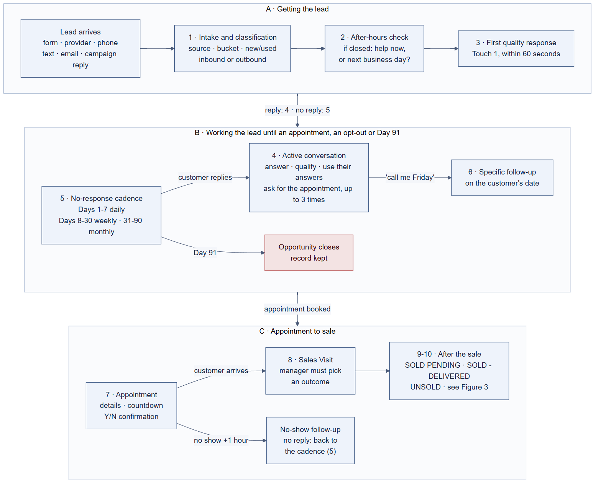
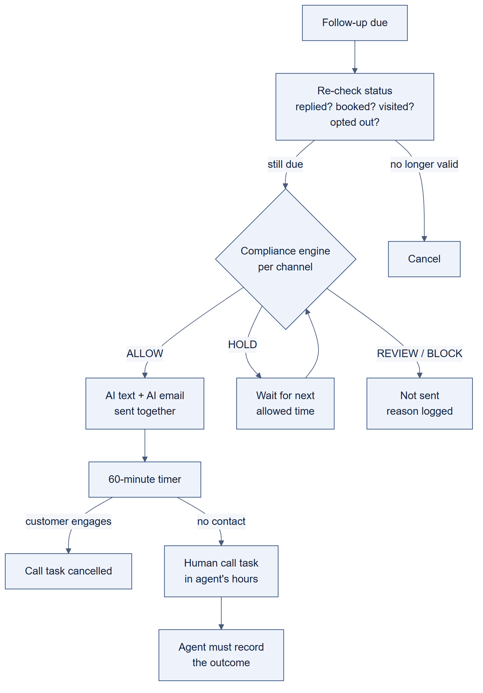
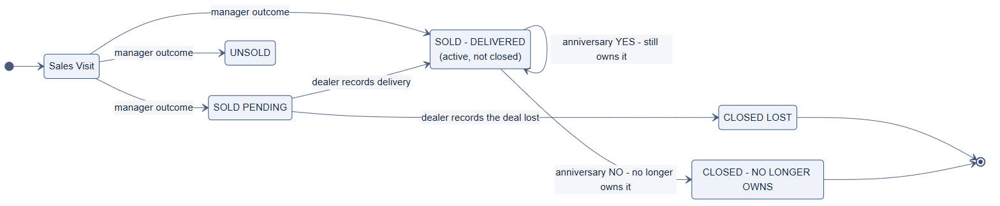

Every requirement in this document is traced to one of these. The short code in brackets is used in each section.
| Source | Received | What it covers |
|---|---|---|
| Conversation standards [CS] conversations.md | 24 Sep 2026 | How the AI must talk: capture, interpret, leverage, advance to an appointment. Successful and failed examples for credit, trade-in, price/payment and service leads. |
| Sales lead blueprint [BP] autpulse.workflowblueprint.png | Before 25 Sep | End-to-end sales workflow: after-hours rule, intake, 3 lead buckets, new/used filter, 6-day no-response cadence, active conversation, 3 appointment asks, personalization, inventory feed, learning engine, escalation, channels. |
| Client messages, 25 Sep [M2] conversation_2.md | 25 Sep 2026 | After-hours choice; strict TCPA on outbound (DealerVault, drips, equity); the main goal is qualifying and booking the appointment, not escalating. |
| New Lead Follow-Up & Appointment Workflow – OMNICHANNEL FINAL [NL] | 26 Sep 2026 | Lead status state machine, Short-Term cadence Days 1–7, Days 8–90, Day 91, appointment, confirmation, no-show, Sales Visit, human call tasks, omnichannel rule. |
| TCPA & AI Communication Compliance Guardrails [TC] | 26 Sep 2026 | The compliance engine every send passes through (ALLOW / HOLD / REVIEW / BLOCK), consent evidence, opt-out, inbound vs outbound, time and frequency, AI voice, audit. |
| Client messages, 26 Sep [M3] conversation_3.md | 26 Sep 2026 | "These cadences will apply to ALL new lead buckets." |
| SOLD PENDING Workflow [SP] | 29 Sep 2026 | Follow-up between a sale and delivery: weekly for 4 weeks, then every 2 weeks, with no time limit. |
| SOLD – DELIVERED Ownership & Retention Workflow – FINAL [SD] | 29 Sep 2026 | Ownership lifecycle after delivery: Day 3 check-in, maintenance, NHTSA recalls, birthday, 10 yearly anniversaries; opportunity, vehicle and customer statuses. |
| Client messages, 29 Sep [M4] conversations_4.md | 29 Sep 2026 | SOLD PENDING and SOLD DELIVERED are "the two final workflows for this SOW"; service workflows are driven by NHTSA and vehicle databases. |
Where two sources disagree, the newer, more specific specification is shown in the body, and the disagreement is listed in Section 17.
The blueprint's core principles [BP]:
A customer's journey from the first lead to long-term ownership. Each numbered box is a workflow described later in this document. Two things apply at every step: the compliance engine, which checks every message before it goes out, and opt-out, which can happen at any time.


Where this applies: Days 1–7, Days 8–30 weekly, Days 31–90 monthly, specific follow-ups, appointment and confirmation touches, no-show touches, and SOLD PENDING touches. Birthday and anniversary messages don't automatically need a call task [SD §12].
Call tasks: they respect the agent's scheduled hours and days and the calling window (outside them, the task moves to the next eligible window). Each one shows the customer, the vehicle/opportunity, the last AI touch and the current status. They support Click-to-Call where available. After the call, the agent must pick an outcome: appointment → Appointment Set; a dated future action → Specific Follow-Up; contact but no next step → Contact Made – No Next Action; no contact → stays in the current flow; opt-out → suppression. [NL p.9]
The AI never invents or assumes: availability, price, incentives, financing approval or terms, payments, trade values, vehicle facts, photos, OEM programs, dealer policy, urgency, service needs, maintenance requirements, mileage, recall status, missing documents, delivery dates, reasons a deal is pending, ownership, appointment availability or customer history. Price changes and OEM offers are used only when verified. Photos only come from an authorized inventory/media source for that vehicle. [CS; NL §13; SP §7; SD §12]
Before writing anything, the AI reads the full lead, conversation, notes, earlier questions, known vehicle and trade details, Customer 360 and DMS history, and current inventory/promotions. It never re-asks something already answered, unless confirmation is genuinely needed, and it varies its angles instead of rotating templates. [NL §4, §13; BP 4; SD §12]
Escalate to a person immediately when the customer asks for a salesperson, indicates an urgent need or is upset. When the customer asks for a phone call, call within 5 minutes during business hours. All escalations are logged and tracked. [BP 8] Escalation isn't the default ending: the aim is the appointment. [M2]
Use the channel the customer came from when possible: SMS/text, email, phone call, web chat, social DM. "Stay consistent. Be responsive. Be human." [BP 9]
Starts: a lead arrives from any source, day or night. Ends: AutoPulse knows who the customer is, why they submitted the lead and what they asked; the lead enters the cadence. [BP 1]
| Class | Example | Treatment |
|---|---|---|
| Consumer-initiated lead (inbound) | Customer submits an inquiry about a vehicle | Store lead source, time, dealer, channel and consent evidence; lead-response rules apply. |
| Outbound marketing | Dealer-started trade/equity, sales or promotional outreach; DealerVault drips | Full outbound compliance checks before enrollment and before each send. "TCPA US rules strictly enforced." [M2] |
| Service / transactional | Appointment confirmation, operational update | No promotional content that changes the nature of the message. |
| Historical-data campaign | Service interval or equity opportunity found in DMS/DealerVault | The data only identifies the opportunity; the compliance engine decides contactability separately. |
| Bucket | Example sources | Word-track emphasis |
|---|---|---|
| 1 · Credit / financing | Capital One, Chase, Carzing, DealerCentric, Credit Application, eUnifi, 700Credit | Financing options, pre-approval, payment structure, required information, how an appointment helps clarify real options. |
| 2 · Trade-in / sell my car | KBB, TrueCar SELL My Car, AccuTrade, CarGurus SELL My Car | Value, appraisal, condition, payoff and equity, an accurate in-person number. Aggressively collect trade data. |
| 3 · General sales | CarGurus, Edmunds, Cars.com, Facebook, Instagram, AutoWeb, CarsDirect, TrueCar (non-trade) | Availability, pricing, features, condition, history, alternatives, trade, financing, and whatever the lead comments show matters most. |
Starts: a lead arrives while the dealership is closed. [BP 0; M2]
Starts: immediately, or in the next eligible window, after a new lead. Timing: "within 60 seconds" [BP 3A].
For a lead tied to a specific vehicle, in this order: 1) vehicle link + image when both are available; 2) link only if no image; 3) image only if no clean link; 4) not tied to a specific vehicle → personalize around the customer's intent instead. Always verify the vehicle is active and available before sending media.
Starts: the customer replies at any point. Any queued no-response touch stops immediately. [BP 3A–B]
| # | Step | Required behavior |
|---|---|---|
| 1 | Answer questions | Clear, honest answers to what they asked. |
| 2 | Identify intent, hot buttons and objections | Find out what matters most; surface concerns early. |
| 3 | Determine trade and fill missing data (mandatory) | Every sales customer ends with NO TRADE or HAS TRADE. If a trade: year, make, model, mileage, condition, payoff/loan, expected value (when relevant). |
| 4 | Assume ready now | The operating assumption is that the customer is ready now; change it only if they explicitly say otherwise and give a valid reason for delay. |
| 5 | Drive the appointment within 72 hours | Give a compelling, customer-specific reason to come sooner rather than later, never fake urgency. |
"A customer answer should NEVER just become another stored field." For every meaningful answer: capture the fact, interpret what it says about their motivation, concern or goal, leverage it truthfully as the reason the next step helps them, and advance by asking for the appointment with specific options. Leverage isn't pressure.
| Lead type | Collect | Turn it into the appointment reason |
|---|---|---|
| Credit | Trade, mileage, payoff, down payment, credit concern | "Evaluate the trade, payoff and financing together so we can determine the actual options instead of guessing." Never promise approval. |
| Trade-in / sell | Mileage, payoff, condition/accidents, sell vs trade | Real appraisal compared with payoff and replacement options against their stated concern. |
| Price / payment | Trade, mileage, payoff, down payment, target payment | Make their payment target the objective of the appointment. |
| Service | Still owns it, current mileage, service done or not, the obstacle | Remove the obstacle (e.g. convenience); offer specific times; note their concern for the advisor. |
Always with specific options ("5:15 today or 10:30 tomorrow"), never "let us know when you're ready."
Track every touch: message strategy, lead source, timing, customer data, response or no response, appointment or no appointment. Learn which combinations get the most engagement and use them more often; A/B test wording, timing and strategies. "Goal of every touch: get the customer to respond."
Starts: New Lead, No Contact Made, Contact Made – No Next Action, or the end of the no-show sequence. The same for every bucket [NL §3; M3]. Stops: at any customer reply (to Active Conversation), an appointment, a Sales Visit, an opt-out, or Day 91. Every touch is call + text + email (Rule 4.2).
| Touch | When | Theme | Required behavior |
|---|---|---|---|
| 1 | Immediately / eligible window | Quality lead response | Section 7. Always ends "Tell me, what are you driving now?" |
| 2 | 3 hours later; next eligible window if blocked | Name nudge | {FirstName}? "This is non-negotiable; do not replace with other sales copy." |
| 3 | Day 2 | Vehicle visual | A useful vehicle photo and a simple vehicle question. |
| 4 | Day 3 | Financing help | Ask if they need help with financing/payment options; no invented terms or approval. |
| 5 | Day 4 | Trade-in | Ask about trade/appraisal using known context; never repeat an answered question. |
| 6 | Day 5 | Vehicle value / feature | A verified feature, trim detail, use case or fact; photo when useful. |
| 7 | Day 6 | Appointment value | A truthful reason to visit (appraisal, comparison, financing review, management review, right-team meeting) and ask for the appointment. |
| 8 | Day 7 | Direct close | Ask if still considering; offer practical appointment options / what day works. |
Human call tasks, Days 1–7: two per scheduled workday: a morning task in the agent's hours, and an afternoon task only if the lead is still in an eligible Short-Term status. A status change cancels the task. After the call, the outcome is required. [NL §3]
| Period | Cadence | Angle |
|---|---|---|
| Days 8–30 | 1 outreach cycle per week (text + email + call) | A fresh, relevant angle: vehicle/photo, financing help, trade, verified inventory/trim, verified price change/OEM offer, appointment invitation. |
| Days 31–90 | 1 outreach cycle per month | Verified price/OEM changes, relevant inventory, trade/equity, financing help, renewed appointment invitation. |
| Day 91 | Active cadence ends | The opportunity closes; the customer stays in the CRM with full history. |
Angle selection: before each touch, read everything known and "choose the most relevant unused angle instead of blindly rotating templates."
opportunity_created_at never changes. Re-entering Short-Term can restart the cadence instance but never resets the Day 91 clock, and
never sends duplicate same-day touches. Tracked: opportunity_age_days, workflow_entered_at, short_term_cycle_day,
last_meaningful_contact_at, last_outbound_at, next_action_at, opportunity_closed_at.
| Event | Result |
|---|---|
| Reply + appointment created | Appointment Set → Appointment workflow |
| Reply, no appointment, no dated next action | Contact Made – No Next Action → Short-Term follow-up |
| Reply with clear future timing ("call me Friday / next month / in a year") | Contact Made – Specific Follow-Up |
| "Not ready" + week/month/year horizon | Future next action; Specific Follow-Up |
| Opt-out | Suppress the affected channel(s); stop prohibited outreach |
| Sales check-in | Sales Visit → manager outcome required |
| No response | Continue the eligible cadence until a transition or Day 91 |
Entry needs structured data "so neither AI nor human intent is lost": next_action_date (required), next_action_time (if known,
else a dealer-configurable default), next_action_channel, next_action_owner (AI or human), context_notes, and
entered_by + timestamp. At the scheduled time, the AI or person follows the notes; the appointment is still the goal. No response within
24 hours → No Contact Made → Short-Term. A future task can outlive Day 91: the opportunity closes, the task stays with the customer and may open a new
opportunity when it's due.
Starts: any appointment created, by the AI or a person, sets Appointment Set and stops Short-Term/Specific follow-up. The AI books from the customer's answers ("I'll reserve 10:30 tomorrow for you") and notes what the team needs to know. [NL §2, §7; CS]
| When | Action |
|---|---|
| 15 minutes after it's set | Text + email with the details, allowing time for correction: "{customer_first_name}, we are all set to meet on {appointment_date} at {appointment_time} at {dealership_name}, {dealership_address}. Please make sure to call or text us if anything changes at {ai_agent_phone}. Looking forward to assisting you!" |
| Each day before (not same-day) | A different vehicle photo + "Counting down to our meeting at {dealership_name}!" |
| Day before | Text + email: "Hello, {customer_first_name}, this is {agent_name} at {dealership_name} confirming our meeting for {date} at {time}. Does this time still work? Please reply Y for Yes or N for No." |
| Confirmed | appointment.confirmed = true; the appointment report updates. |
| Appointment + 1 hour, no Sales Visit | Appointment No Show → no-show workflow. |
| Sales Visit on the appointment date | Sales Visit; appointment.showed = true; the report updates, whatever the arrival time. |
Same-day appointment: the 15-minute details go out when still useful; no countdown or day-before confirmation. One active primary sales appointment per opportunity by default. [NL §7, §15]
| Response | Action |
|---|---|
| Y / clear yes | Mark confirmed; Appointment Set stays active. |
| N / clear no | Not confirmed. Immediately try to reschedule and capture a new date/time. |
| Ambiguous | Ask for clarification; not confirmed until clear. |
| No response | Stays scheduled but unconfirmed; normal logic continues. |
| Confirmed by phone | A person marks it confirmed; the report updates. |
| Rescheduled | Update it; cancel old confirmation and no-show timers; schedule against the new time. An old appointment can never create a false no-show. |
| Cancelled | Try to reschedule; with no new appointment or dated next action → Contact Made – No Next Action. [NL §15] |
| Step | When | Action |
|---|---|---|
| 1 | Appointment + 1 hour | Text + email + vehicle photo: "Hello, this is {agent_name} with {dealership_name}. I am looking for you in the showroom - are you here and working with someone?" |
| 2 | 24 hours later, no reply | Text + email: "Hi! This is {agent_name} at {dealership_name} regarding your {model} purchase. How did everything go when you came in? Did you get a chance to stop by?" |
| 3 | No response after step 2 | Contact Made – No Next Action → Short-Term follow-up. Required business rule, "must not be changed to No Contact Made." |
| Any | Sales Visit logged | Stop the no-show flow; Sales Visit; mark showed if on the appointment date. |
Starts: the customer checks in at the dealership's SALES department. [NL §10]

What it is: an active deal-completion status after a Sales Visit, when the deal is sold but the vehicle isn't yet delivered. "SOLD PENDING is not an unsold lead": it never enters the New Lead / Day 1–90 cadence. Only two outcomes, set by an authorized dealership user: SOLD – DELIVERED or CLOSED LOST. Nothing changes because of time: no Day-90 or any other expiry. [SP §1–2, §4, §6]
| When | Theme | What to ask |
|---|---|---|
| Week 1 | Documentation + questions | Have they provided everything the salesperson requested? Any questions about the purchase? Never assume a specific missing document. |
| Week 2 | Support check-in | Anything they need from the salesperson or dealership? Any questions come up? |
| Week 3 | Purchase / vehicle check-in | Help with vehicle or purchase questions; verified, relevant items only (trade, insurance, paperwork, features, accessories). |
| Week 4 | Relationship check-in | Warm and neutral: "We just wanted to stay in touch while your purchase is being completed. Do you have any questions about your vehicle or is there anything our team can help you with at this time?" |
| Every 2 weeks after | Ongoing | Questions? Anything needed? Where appropriate, do they have everything requested? Use deal context; never repetitive. |
| Event | Action |
|---|---|
| Question the AI can answer | Answer from verified context; record; stay SOLD PENDING. |
| Needs a person | Create an escalation/task with the question and context; stay SOLD PENDING. |
| Customer provides requested info | Record it; route to the right dealership user; stay SOLD PENDING. |
| Dealer records delivery | Immediately SOLD – DELIVERED; cancel all SOLD PENDING actions. |
| Dealer records the deal lost | Immediately CLOSED LOST; cancel all SOLD PENDING actions. |
| No response | Continue the weekly or two-weekly cadence. |
Starts: an authorized dealership user sets SOLD – DELIVERED. All SOLD PENDING activity stops immediately. [SD §2]
| Trigger | Timing | What happens |
|---|---|---|
| Post-delivery check-in | Day 3 | VIN → vehicle database → maintenance schedule → first recommended service → offer appointment. "Hi [First Name], we hope you are enjoying your new [Year Make Model]! Do you have any questions about your vehicle or anything we can help with? I can also get your first recommended service scheduled now so it is already taken care of." YES → service scheduling. Later/not yet → no pressure; reminders stay active. An existing appointment suppresses the offer. |
| Maintenance reminders | Per vehicle, ongoing | VIN → schedule → known mileage and/or time → service due → outreach → service appointment. Verified mileage when available; otherwise time-based intervals, never estimated mileage presented as actual. Never invent requirements. Completed, outside or updated-mileage service recalculates. |
| NHTSA safety recalls | Ongoing | VIN → NHTSA recall check → open recall → outreach → service appointment. Independent of maintenance; never claim a recall without VIN-specific authoritative support; store id, description, detected date, status, source, last-checked date; stop when closed; cadence controls; not presented as a manufacturer campaign unless the data says so. |
| Birthday | Yearly | Only with a verified birth month/day from an authorized source. "Happy Birthday, [First Name]! Everyone at [Dealership] wishes you a fantastic day!" Customer-level; never a sales pitch. |
| Ownership anniversary | Yearly, years 1–10 | From each vehicle's delivery date: "Happy anniversary with your [Year Make Model]! Do you still have your [Model]? Reply YES or NO." |
| Trade / equity / repurchase | — | Next SOW. Architecture reserved only. |
ownership_confirmed_at; maintenance, recalls and anniversaries continue.CUSTOMER_REPORTED. No automatic trade pitch. Recalculate the customer's status.INACTIVE only when both: no open lead/opportunity and no currently owned vehicle. Otherwise ACTIVE. Unknown ownership never counts as zero. A new open opportunity or owned vehicle makes an INACTIVE customer ACTIVE again. Each vehicle has its own ownership record.
Every outbound message, from any workflow, passes this gate before delivery [TC §1]:
| Decision | Meaning [TC §11] |
|---|---|
| ALLOW | All checks pass; the message may be sent. |
| HOLD | Maybe later; queued until the next compliant time/condition, and never released before it. |
| REVIEW | Evidence or classification is ambiguous; no automated marketing until a person resolves it. |
| BLOCK | Prohibited; the AI and users can't force-send it. |
consent=true isn't enough; missing evidence → CONSENT_REVIEW_REQUIRED, no automated marketing.| Level | Status | Meaning |
|---|---|---|
| Lead | New Lead | Lead received; enters Short-Term follow-up. |
| Lead | No Contact Made | No meaningful two-way contact; Short-Term. |
| Lead | Contact Made – No Next Action | Contact, but no appointment or dated next action; Short-Term. |
| Lead | Contact Made – Specific Follow-Up | A defined future action with date/time/channel/owner/notes. |
| Lead | Appointment Set | A valid appointment exists. |
| Lead | Appointment No Show | Appointment + 1 hour with no Sales Visit. |
| Lead | Sales Visit | Customer checked in at SALES; manager outcome required. |
| Lead | Opted Out / Suppressed | A revocation or suppression event; prohibited channels stop. |
| Lead | Opportunity Closed – No Response | Day 91 with no superseding outcome (see question 1). |
| Opportunity | SOLD PENDING | Sold, not yet delivered; active; no time expiry. |
| Opportunity | SOLD – DELIVERED | Active ownership lifecycle; not closed. |
| Opportunity | UNSOLD | A manager outcome after a Sales Visit; next step not defined (question 2). |
| Opportunity | CLOSED LOST | Terminal: the opportunity was lost. |
| Opportunity | CLOSED – NO LONGER OWNS | Terminal: the customer no longer owns the sold vehicle. |
| Vehicle | ACTIVE / NO_LONGER_OWNED | Per vehicle ownership record. |
| Customer | ACTIVE / INACTIVE | INACTIVE only with no open opportunity and no owned vehicle. |
Event lists the client recommends: NL §14, SP §11, SD §14. Field lists: NL §6, §12; TC §2, §6, §11; SP §11; SD §11, §14.
Places where the client's own documents disagree, or where a behavior is required but not fully defined. Each needs one answer before it's built. Nothing here has been decided on the client's behalf.
| # | Question | Why it's open |
|---|---|---|
| 1 | Day 91: does "Opportunity Closed – No Response" still exist, or does Day 91 become CLOSED LOST? | NL §1 has it as a status; SD says the ONLY two closed statuses are CLOSED LOST and CLOSED – NO LONGER OWNS. |
| 2 | UNSOLD: what happens after a manager picks UNSOLD: back into follow-up, or CLOSED LOST? | NL §10 requires UNSOLD as an outcome; SP and SD don't define it. |
| 3 | After hours, "help now": does the conversation continue at any hour, or only within TCPA hours? | M2: "if he says yes i need it now then it will start communication right away." BP 0: "continues the conversation immediately (if within TCPA allowed hours)." |
| 4 | Contact hours: 8am–9pm customer time everywhere, or the counsel-approved state table (some states are stricter)? Who supplies the table, and when? | BP 0 says 8am–9pm; TC §7 says don't hard-code one window; use a versioned state table. |
| 5 | Initial cadence: 7 days / 8 touches (NL) or 6 days / 7 touches (BP)? Touch 2 wording "{FirstName}?" (NL) or "Hi [Customer Name]?" (BP)? | The two documents differ. NL is newer and marked FINAL; please confirm it replaces the blueprint's cadence. |
| 6 | Touch 1 ending: must it always end "Tell me, what are you driving now?", even after hours (when it also offers "now or next business day") and when the customer already asked to come in? | NL §3 says ALWAYS; BP 0 and BP 3B also ask the first message to offer the after-hours choice and to drive the appointment. |
| 7 | Touch 2 by email: does "{FirstName}?" also go by email (and with what subject), given every follow-up is text + email + call? | NL §3 defines Touch 2 as a text; NL p.10 says every follow-up is text + email + call. |
| 8 | Call tasks: are the Days 1–7 "two call tasks per workday" separate from the 1-hour call task after each touch, or the same tasks? | NL §3 and NL p.9 both create call tasks on Days 1–7. |
| 9 | Where do call tasks, statuses and reports live? Agents need a task list with Click-to-Call and an outcome prompt; managers need the appointment/showed report and the manager-outcome prompt. | NL §3, §7, §10 and p.9 require screens for staff. Please confirm these are in the dealer platform's scope for this SOW. |
| 10 | "Meaningful contact": what counts? A reply of any kind, "ok", an auto-reply, a STOP, a bounce? | It cancels call tasks and changes statuses (NL p.9, SP §3), but isn't defined. |
| 11 | No-contact routing: please confirm both, since they route differently: a specific follow-up with no reply in 24h → No Contact Made; a no-show with no reply → Contact Made – No Next Action. | NL §6 vs §9 (the spec itself flags the no-show wording and keeps it as a required rule). |
| 12 | When does New Lead become No Contact Made? After Touch 1, Touch 2, or the end of Day 1? | NL §1 names both statuses but not the moment of change. |
| 13 | 15-minute appointment message: if the dealer system already sends a booking confirmation, should the 15-minute message replace it, or be sent too? | NL §7 requires it; the platform currently sends its own on booking, so the customer would get two. |
| 14 | Sales Visit check-in: how is "customer logged into dealership SALES" recorded: a check-in system, or staff setting a status? | NL §1, §10 depend on it for showed/no-show. |
| 15 | Maintenance and birthday data: which "vehicle database" provides maintenance schedules, and which authorized source provides birth dates? | SD §4–5, §7 require them; M4: "NHTSA and vehicle databases will dictate those." |
| 16 | Service appointments: are service appointments booked by the AI in this SOW (Day 3 first service, maintenance, recalls), and into which calendar? | SD §4–6 and CS example 4 end in a service appointment. |
| 17 | Web chat and social DM: are these channels in this SOW? | BP 9 lists them; no specification defines them. |
| 18 | Phone-call request: "call within 5 minutes during business hours". Is this a call task for staff (same mechanism as question 9)? | BP 8. |
| 19 | National DNC: should numbers be checked against the national Do-Not-Call registry (a paid service), or is consent + internal suppression enough? | TC §1 lists "National DNC requirements"; counsel to confirm (TC §13). |